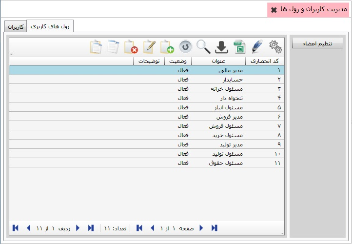
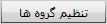
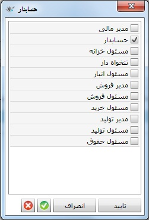
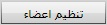

در این قسمت می توانید در نرم افزار به تعداد کسانی که قرار است با نرم افزار کار کنند کاربر تعریف کنید. اگر بر روی منوی «مدیریت کاربران و رول ها» کلیک کنید صفحه ای طبق شکل زیر باز می شود.

همان طور که مشاهده می کنید، این صفحه دارای دو تب می باشد که تب کاربران به صورت پیش فرض نمایش داده می شود. در این تب لیست کاربران تعریف شده در سیستم قرار دارد، البته کاربر مدیر سیستم به صورت اتوماتیک با ایجاد دیتابیس ایجاد می شود. می توانید با زدن کلید (F8) یا کلیک بر روی گزینه اضافه از نوار ابزار بالای جدول، کاربر جدید تعریف کنید. شکل زیر فرم ایجاد کاربر را نمایش می دهد:

پس از ورود نام کاربری و کلمه عبور در صورت نیاز و تکمیل سایر فیلدها و زدن گزینه تایید، نام کاربر مورد نظر شما در لیست نام کاربران قرار خواهد گرفت.
وقتی کاربران خود را مشخص کردید، قدم دوم تعیین رول های کاربری موجود در سازمان شما است. برای اینکه بتوانید دسترسی های لازم برای کاربران تعریف شده در نرم افزار را مشخص نمایید، لازم است در نرم افزار رول های کاربری تعریف کنید و به هر یک از کاربران یک رول کاربری اختصاص دهید. اگر روی تب دوم یعنی «رول های کاربری» کلیک نمایید، شکل زیر را مشاهده خواهید کرد:
همان طور که مشاهده می کنید رول های کاربری پیش فرضی در سیستم وجود دارند. شما می توانید رول های کاربری جدیدی را تعریف کنید، کافیست با کلیک بر روی گزینه اضافه رول کاربری مورد نظر خود را ایجاد نمایید.
پس از این که کاربران و رول های کاربری را مشخص کردید می توانید هر یک از کاربران خود را به رول کاربری متناسب با آن اختصاص دهید. برای این کار در تب کاربران، کاربر مورد نظر را انتخاب کرده و در سمت راست صفحه بر روی گزینه  کلیک کنید تا پنجره زیر باز شود:

در شکل بالا رول های کاربری تعریف شده قراردارند، می توانید به کاربر انتخابی هر یک از رول های شکل بالا را اختصاص دهید.
همچنین اگر در تب رول های کاربری قرار داشته باشید، با انتخاب یکی از رول ها و کلیک روی کلید

در سمت راست صفحه، پنجره زیر به نمایش درمی آید:

در شکل بالا رول کاربری حسابدار انتخاب شده است و شما از پنجره باز شده می توانید کاربر مورد نظر را به رول انتخاب شده اختصاص دهید.